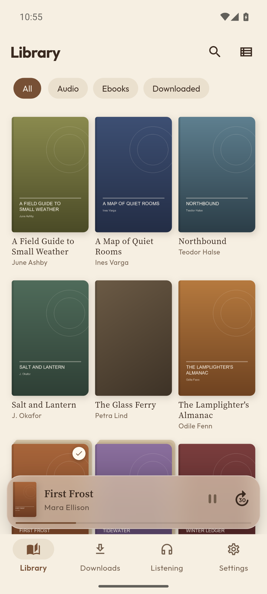
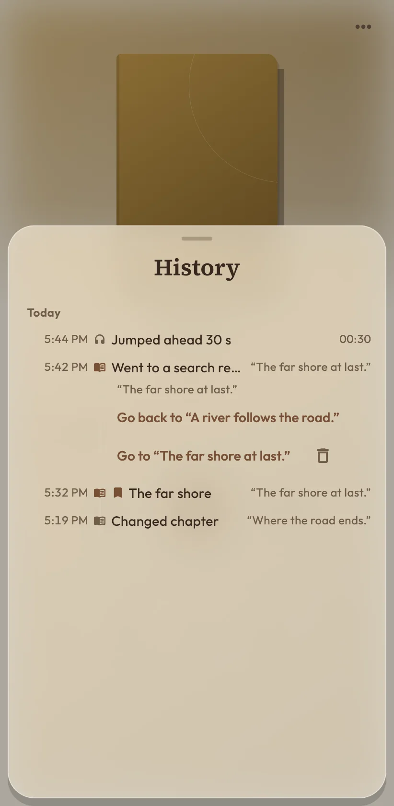
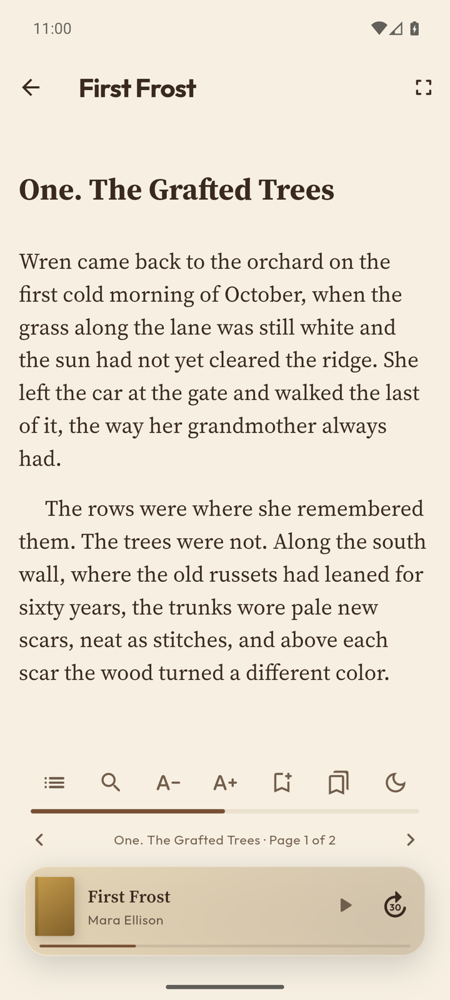
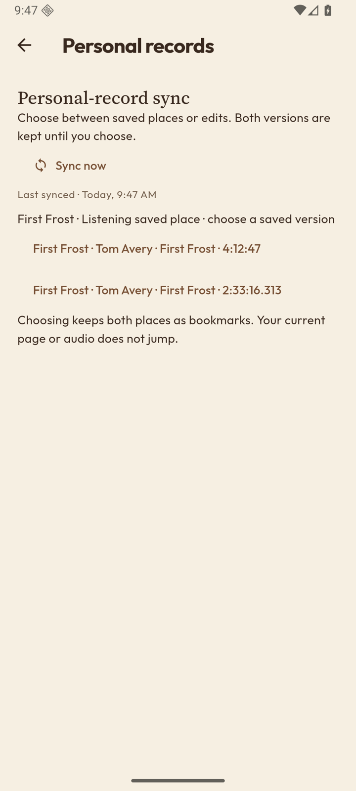

Your books, on paper you can carry.
An Android app for the audiobooks and ebooks on your Jellyfin server, the free media server that you run yourself. Made so that books feel as good there as your films and music.
Written in Flutter · open source · Android today

Why I made Bookfin
Jellyfin is a lovely home for films and music. Books have been there for years, but they get far less attention, and the apps show it. The server reads an audiobook's chapters, but the official apps give you no chapter list. Jellyfin keeps only your latest position, with no record of your skips, jumps, and bookmarks. If you scrub too far by accident, or go back to hear a passage again, there is no quick way to return to where you were. An audiobook and its ebook sit in separate lists. A download that stops when the app closes waits for you to restart it, and removed downloads can leave files behind.
Books are a quiet corner of Jellyfin, and the server leaves a lot for an app to do. So I built the app that I wanted on top of it: one that treats your books like a shelf, remembers every place you have been, and feels good in your hand.
I wrote Bookfin in Flutter. It draws every frame with its own engine, so the app looks and behaves the same wherever it runs, and the same code can grow to more platforms later. The codebase stays small, clean, and easy to read.
One. The shelf
Audiobooks and ebooks, on one shelf, in your pocket.
Most Jellyfin apps keep a book's audio and its text in different places. Bookfin puts them under one cover, shows only your book libraries, and keeps each series in reading order.
Download the audiobook, the ebook, or both, then listen and read with no connection at all. Lost signal, a dead battery, or a phone that dies mid-download? Bookfin picks up where it left off, fetches only what is missing, and never hands you a broken file. When you remove a book, its files really go.
- Series stack into one card and open in reading order.
- Filter by audiobooks, ebooks, or what is downloaded.


Two. The player
Made for long books and late nights.
A twenty-hour book needs more than a play button. Bookfin knows its chapters and shows you where you are in them. After sunset, it turns warm and dim, with a glow in the colors of the cover.
- Chapter marks and bookmarks on the position bar.
- Time left in the chapter and in the whole book.


Three. Shared history
Every place you have been, in audio and text.
Skipped too far or followed a reference? A book’s listening moves, reading moves, and bookmarks share one History, available from the player, reader, or book page.
- Choose Go to on any entry to open the audiobook or ebook at that place.
- Undo a jump or return to where it began without erasing later history.
- Name bookmarks in either edition. Your history stays until you delete it.

Four. The reader
Your ebooks, at home in Bookfin.
EPUB · MOBI · PDF
The built-in EPUB reader lays out and draws pages entirely in Flutter, without a WebView. It shares the app’s controls and one implementation across platforms.
- Choose your text size and Cream or Night colors.
- Select and copy text, follow links, and open footnotes.
- Turn pages with touch, a keyboard, or a trackpad.
Android is the main app today, with a working macOS reader. iOS, Linux, and Windows apps are still to come.

EPUB performance
Bookfin, epub.js in Android WebView, and KOReader’s engine ran in small release test apps on the same Android 16 emulator.
Average time in milliseconds, with each of three books weighted equally. Lower is faster.
On a small screen, scroll the table sideways. With a keyboard, focus it and use the arrow keys.
| Reading action | Bookfin | WebView + epub.js | KOReader engine |
|---|---|---|---|
| Fresh open | 611.8 | 600.8 | 263.7 |
| Cached reopen | 116.6 | 331.3 | 67.2 |
| Page turn | 60.9 | 68.8 | 62.8 |
| Chapter turn (visited) | 59.4 | 87.8 | 63.0 |
| Text size 18 → 20 | 115.0 | 70.5 | 114.2 |
Includes rendering and screenshot verification. Layout work differs between engines; these are emulator results, not phone timings. Books, averaging, and test details.
Five. PDF reflow
The original words, with room to read.
Page words rearranges images of the printed words to fit your screen. The book keeps its letterforms and italics at the size and colors you choose.
- Keep paragraphs, headings, and indents. Figures and charts stay together as images.
- Turn through complete lines, with no sideways scrolling.
- Switch to Original or plain Text. Bookfin remembers each book’s view and Trim margins choice.
- Recognize English scans on the phone, offline, for search and text selection.


Nihil Unbound, printed page 9. Reflow continues on the next screen. Bookfin captures and excerpt notes.
Six. Every device
Your place, on every device.
Jellyfin stores how far you got, and Bookfin reports that like any other app. But Jellyfin has no bookmark or history feature. A small server plugin, Bookfin Storage, fills that gap and carries them between your devices.
- If two devices disagree, Bookfin asks which place is real.
- Choosing keeps both places as bookmarks, so nothing is lost.
- Without the plugin, everything still works on one phone.
- Your records stay on your own server.


Seven. Getting it
Build it once, and your shelf comes with you.
Bookfin is a personal project with no store release yet. You build it from source on a computer, then install it on your phone. A Nix flake pins every tool, so the build needs nothing else installed.
You need:
- A computer with Nix: an Apple Silicon Mac, x86_64 Linux, or WSL2 on Windows
- A 64-bit Android phone and a USB cable
- A Jellyfin server with a book library
# on your Mac, Linux, or WSL2 computer, with the phone plugged in
git clone https://tangled.org/xenolandscapes.com/bookfin
cd bookfin
nix develop --command flutter pub get
nix develop --command bash tool/bookfin build-android
adb install build/app/outputs/flutter-apk/app-debug.apk
Then open Bookfin and sign in with your Jellyfin address, user name, and password. To sync bookmarks and history between devices, add the Bookfin Storage plugin to your server. The README has its steps.